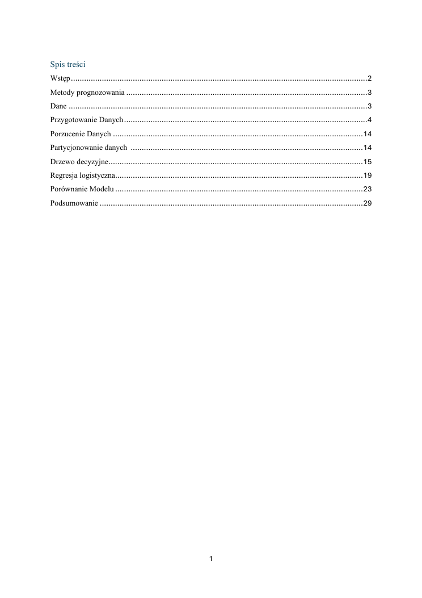

PDF · 29 stron01 / SAS
SAS Enterprise Miner
Predictive model comparison
A comparison of decision trees and logistic regression using car insurance data. The report covers importing, exploring and preparing the dataset, predictive modeling and evaluation.